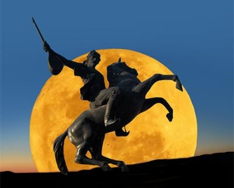

Köroğlu halk şairleri içerisinde kavganın,özgürlüğün sembolüdür.Doğum, ölüm tarihleri bilinmeyen, bir eski efsane kahramanı olan Köroğlu'nun adını alan bir şairdir.Bu şairin,III. Murat zamanında Osmanlı ordusuyla İran savaşlarına katıldığı bilinmektedir.Bolu Beyinden babasının intikamını almak üzere dağlara çıkan,yiğitlik ve iyilikseverliği destanlaşan isyancı Köroğlu ile şair Köroğlu halk zihninde kaynaşmış durumdadır.

Dünyadaki En Büyük Köroğlu Anıtı:Bolu/Merkez
Köroğlu Destanı
Köroğlu aslında eski bir asker ve sonradan dağa çıkan bir Celali eşkiyasıdır.Bu adı eski Türk destanlarındaki bir kahramandan almıştır.Asıl adı Ruşen'dir.Köroğlu; yiğit, adaletli, inançla dolu ideal bir insan profilidir.Azerbaycanda çok yaygın olan "Koroğlu Efsanesi" ile büyük oranda benzeşir.Köroğlu destanı Anadolu Türklüğü'nün yüreğinde yaşayan tutkularla isteklerin, değerlerle inançların sembolüdür.Bu destana göre Köroğlu'nun asıl adı Ruşen Ali'dir.Babası Yusuf, Bolu Beyi'nin seyisidir.At meraklısı olan Bolu Beyi,seyisi Yusuf'u cins bir at almaya gönderir;fakat Yusuf'un getirdiği tayı beğenmez,adamın gözlerine mil çektirir.Yusuf tayı ve oğlunu alıp memleketten çıkar.Ruşen Ali,babasının tarif ettiği tarzda,tayı karanlık bir ahırda besler.Tay,belli bir zaman sonra kanatlanır,eşsiz bir küheylan olur.Yusuf ile Ruşen Ali,Aras ırmağına gider,orada Bingöl'den inecek olan üç sihirli köpüğü beklerler.Yusuf,köpükleri içince,tekrar görmeye başlayacak,gençleşecek ve Bolu Beyi'nden intikamını alacaktır.Fakat,Ruşen Ali köpükleri kendisi içer,babasına köpüksüz su verir.Yusuf buna bir yandan üzülür,bir yandan da,oğlu intikamını alacak bir yiğit olacağı için sevinir.Bu sihirli üç köpükten biri Köroğluna ebedi hayat,biri yiğitlik,biri de şairlik sağlar.Yusuf,oğluna intikamını almasını tavsiye ettikten sonra ölür.Ruşen Ali Kır-Atı ile birlikte dağa çıkar.Köroğlu diye ün alır,bir derebeyi gibi yaşamaya başlar,her savaşta üstün gelir;bezirganlardan,beylerden,paşalardan aldıklarını yoksullara dağıtır.Delikli demir(tüfek) icat olunup da eski yiğitlik gelenekleri bozulunca,arkadaşlarına dağılmalarını tavsiye eder,sır olur,kırklara karışır.